Block Smart Delay
Smart delay là cách dừng chờ thông minh trước khi điều hướng khách hàng đến block hoặc kịch bản tiếp theo. Chẳng hạn bạn muốn tạo một kịch bản trong đó hỏi về nhu cầu của khách hàng, sau đó chờ 1 phút bạn sẽ kiểm tra rằng khách hàng đã trả lời hay chưa. Nếu chưa thì có thể gắn Chăm sóc để bám đuổi, nếu có thì có thể dẫn đến kịch bản bán hàng đã thiết lập sẵn.
1. Cách sử dụng Smart Delay
1.1 Tạo block Smart Delay
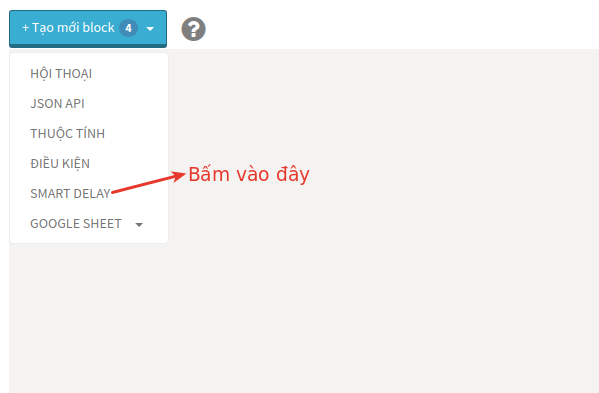
1.2 Chọn thời gian chờ
Có thể cài đặt thời gian chờ linh động là giờ, phút hoặc ngày.
Ngay lập tức
Trường hợp áp dụng: Bạn muốn kịch bản sẽ chạy ngay lập tức nhưng chỉ chạy trong giờ hành chính, từ thứ 2 đến thứ 6. Thì cài đặt như hình dưới đây
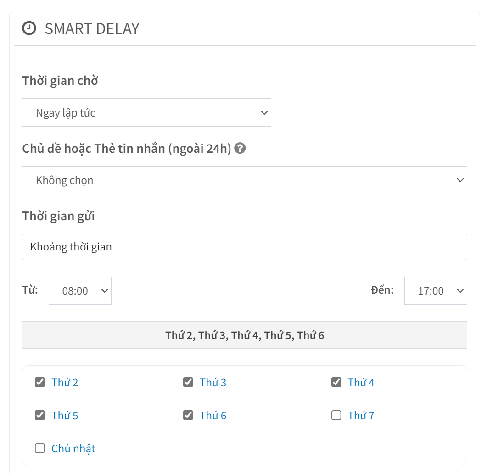
Đúng thời gian
Trường hợp áp dụng: Bạn muốn kịch bản sẽ chạy vào lúc 88:00 ngày nào đó. Thì cài đặt như hình dưới đây, để có thể chạy ngoài 24h bạn cần chọn thêm Chủ để hoặc thẻ tin nhắn
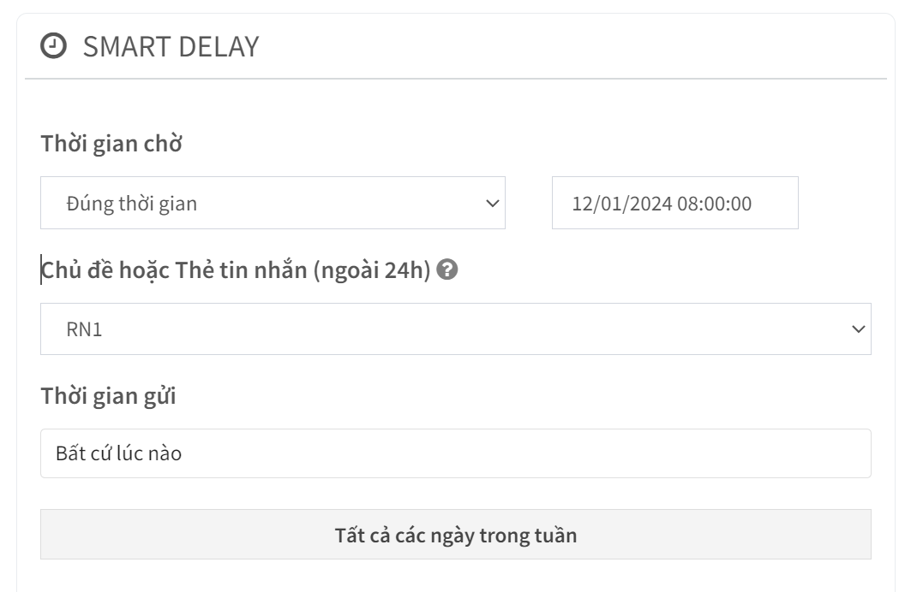
Phút ; Giờ và Ngày: Kịch bản sẽ chạy sau khoảng một khoản thời gian là x phút/giờ/ngày
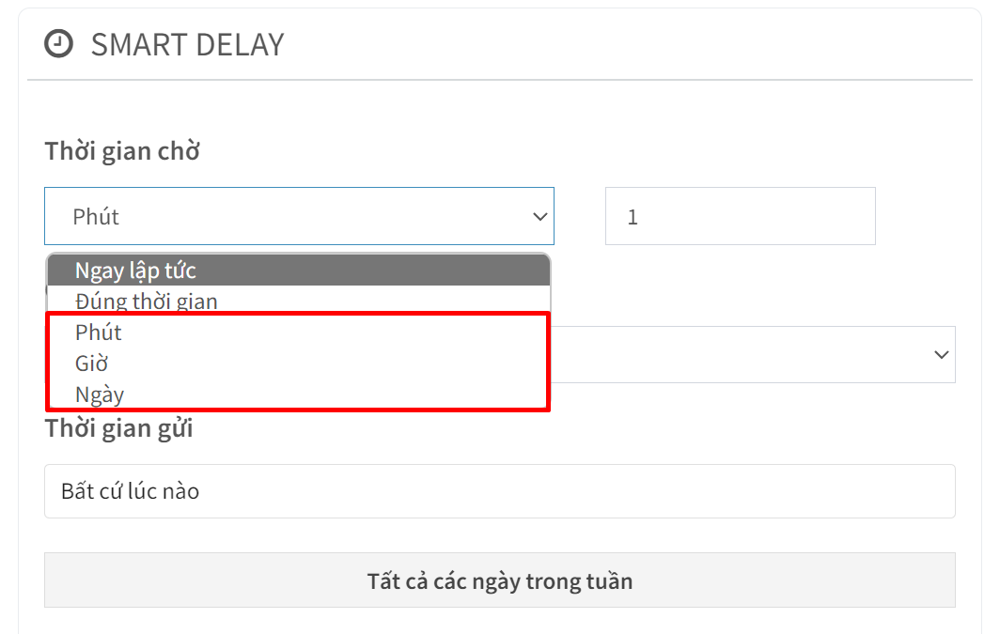
Chủ đề hoặc Thẻ tin nhắn (ngoài 24h): Sử dụng khi bạn muốn gửi ngoài 24h
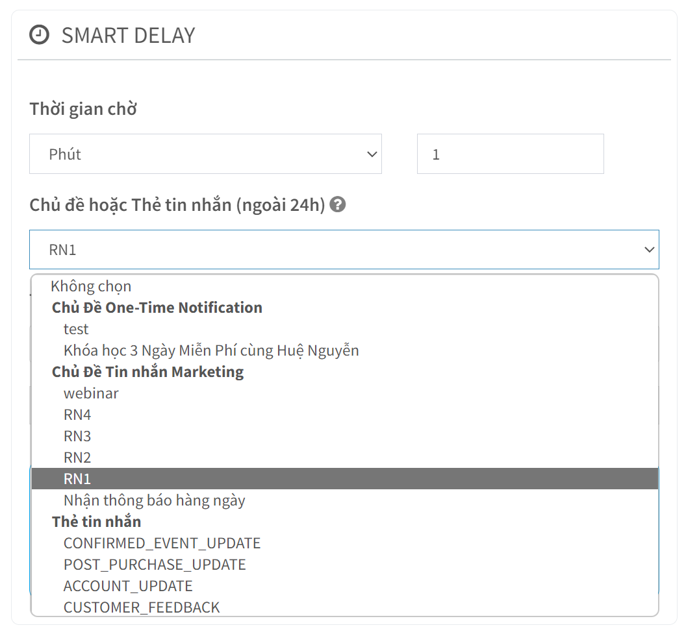
Thời gian gửi: Có thể chọn chạy bất cứ lúc nào hoặc một khung giờ nào đó trong ngày
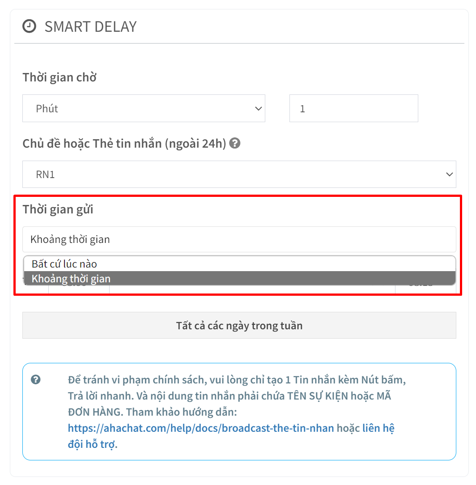
Tất cả các ngày trong tuần: Cho phép tùy chọn chạy theo các thứ trong tuần
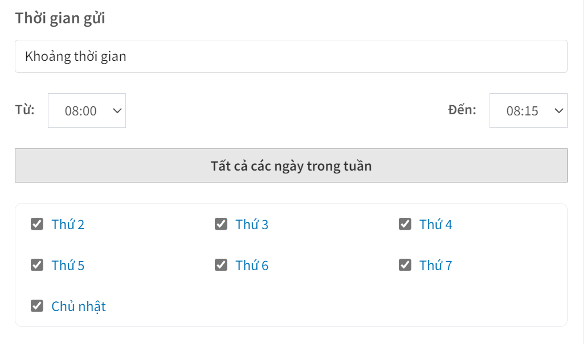
Tại đây bạn có thể thêm Điều kiện để rẽ nhánh tới kịch bản hay block bất kỳ mà mình muốn.
1.3 Nối đến block hoặc kịch bản
Block Smart Delay có biểu tượng là hình chiếc đồng hồ và có thể nối đến kịch bản hay block bất kỳ mà mình muốn.
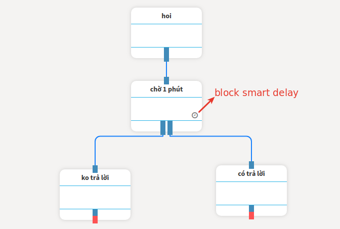
2. Cách ứng dụng Smart Delay
2.1 Gửi Lời nhắc
Bất cứ khi nào chúng tôi gửi nội dung, chúng tôi không nên mong đợi người đăng ký đã sẵn sàng ngay lúc đó.
Con người là những sinh vật bận rộn và với Messenger, trên điện thoại của họ, rất có thể nội dung bạn chia sẻ sẽ đến tay họ vào những lúc không thuận tiện.
Khi điều đó xảy ra, có thể mọi người sẽ mở cuộc trò chuyện để kiểm tra những gì bạn đã gửi cho họ, và sau đó chỉ cần đóng lại vì họ không có thời gian.
Đó là lý do tại sao tôi bao gồm một câu trả lời mà mọi người có thể nhấp vào để nhận lời nhắc sau này trong ngày:
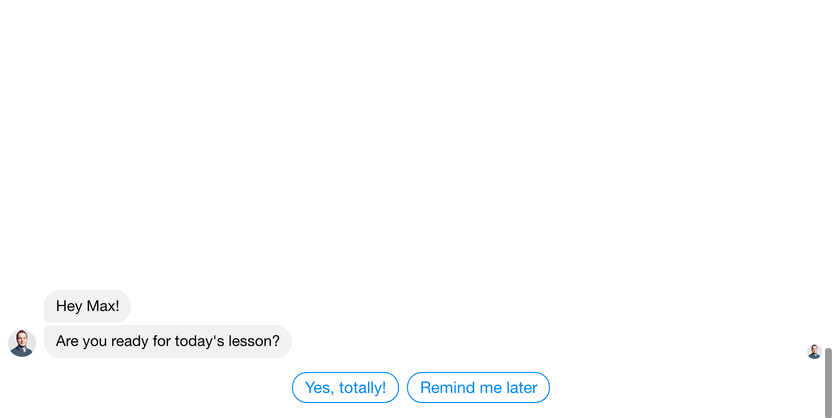
Và điều này đã là một thành công lớn!
Đây là những gì Dòng chảy trông như thế nào?
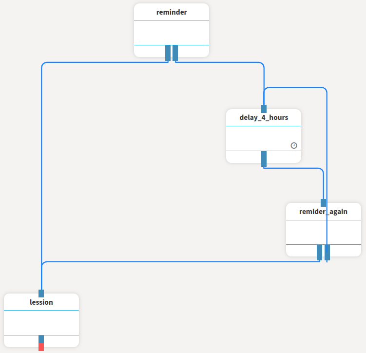
Xem cách nó hoạt động như thế nào?
Khi họ nhấp vào “Nhắc tôi sau”, chúng tôi sẽ gửi cho họ một tin nhắn để cho họ biết rằng chúng tôi sẽ nhắc họ sau 4 giờ, ngoài ra chúng tôi cung cấp cho họ một tùy chọn để tiếp tục sớm hơn nếu họ muốn.
Sau khi chúng tôi gửi tin nhắn đó, chúng tôi sẽ tự động tiếp tục với Smart Delay.
Sau Smart Delay, chúng tôi sẽ kiểm tra xem người đó đã tiếp tục trong thời gian đó chưa.
Nếu có, chúng tôi xóa Thẻ vì nó đã phục vụ mục đích của nó và chúng tôi dừng lại.
Nếu không, chúng tôi sẽ gửi lại lời nhắc.
Điều này thực sự hoạt động thực sự tốt; đó là một cách tuyệt vời không thúc ép để thu hút khách hàng.
2.2 Gửi Theo dõi
Sau đó, cuối cùng nhưng không kém phần quan trọng, gửi theo dõi.
Tôi đặc biệt thích làm điều này sau khi tôi đã gửi cho ai đó một phần nội dung trên trang web của tôi.
(như video, bài báo hoặc podcast)
Dưới đây là một ví dụ về việc theo dõi sau khi ai đó nhận được một bài học.
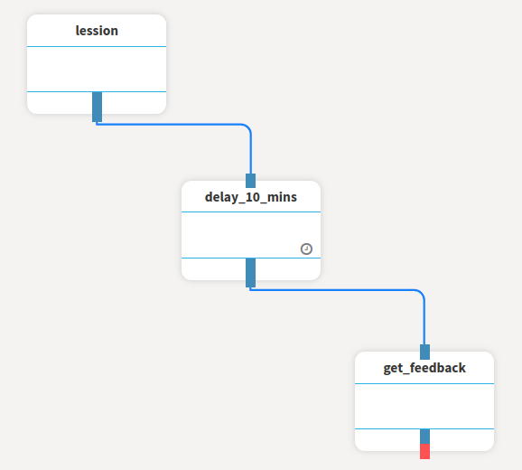
Rất đơn giản phải không? Chỉ cần đặt thời gian Smart Delay thành số phút mà bạn cho rằng người đăng ký cần xem hết nội dung.
Bạn có bất kỳ câu hỏi nào liên quan đến block Smart Delay trong AhaChat? Bạn muốn khởi chạy chiến dịch tiếp cận khách hàng của mình bằng Chatbot với một số lời khuyên chuyên môn từ Đối tác tiếp thị của Facebook? Đừng ngần ngại liên hệ với chúng tôi để có câu trả lời nhanh nhất và hiệu quả nhất! Tận hưởng công cụ chatbot miễn phí của chúng tôi mà không cần phải trả bất kỳ chi phí nào!